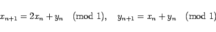
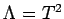

Inhalt Index DeskTop Bronstein

 Dynamische Systeme und Chaos Quantitative Beschreibung von Attraktoren Seltsame Attraktoren und Chaos
Dynamische Systeme und Chaos Quantitative Beschreibung von Attraktoren Seltsame Attraktoren und Chaos


Ein Attraktor  von
von  heißt fraktal, wenn er weder eine endliche Anzahl von Punkten, eine stückweise differenzierbare Kurve oder Fläche noch eine Menge, die von einer geschlossenen stückweise differenzierbaren Fläche umgeben wird, darstellt. Ein Attraktor heißt seltsam, wenn er chaotisch, fraktal oder beides ist. Die Begriffe chaotisch, fraktal und seltsam werden für kompakte invariante Mengen, die keine Attraktoren sind, analog benutzt. Ein dynamisches System heißt chaotisch, wenn es eine kompakte invariante chaotische Menge besitzt.
heißt fraktal, wenn er weder eine endliche Anzahl von Punkten, eine stückweise differenzierbare Kurve oder Fläche noch eine Menge, die von einer geschlossenen stückweise differenzierbaren Fläche umgeben wird, darstellt. Ein Attraktor heißt seltsam, wenn er chaotisch, fraktal oder beides ist. Die Begriffe chaotisch, fraktal und seltsam werden für kompakte invariante Mengen, die keine Attraktoren sind, analog benutzt. Ein dynamisches System heißt chaotisch, wenn es eine kompakte invariante chaotische Menge besitzt.
| Beispiel |
|
Im Einheitsquadrat wird die Abbildung |
|  | (17.52) |
(ANOSOV-Diffeomorphismus) betrachtet. Das System ist in Wirklichkeit auf dem Torus T2 als adäquater Phasenraum definiert. Es ist konservativ, besitzt das LEBESGUE-Maß als invariantes Maß, hat abzählbar unendlich viele periodische Orbits, deren Vereinigung dicht liegt, und ist mischend. Andererseits ist  eine invariante Menge mit ganzzahliger Dimension 2.